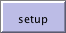
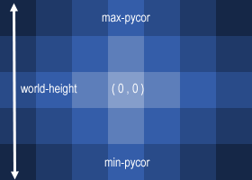

If you read the Sample Model: Party section, you got a brief introduction to what it’s like to explore a NetLogo model. This section will go into more depth about the features that are available while you’re exploring the models in the Models Library.
Throughout all of the tutorials, we’ll be asking you to make predictions about what the effects of making changes to the models will be. Keep in mind that the effects are often surprising. We think these surprises are exciting and provide excellent opportunities for learning.
You may want to print out the tutorials to make them easier to refer to while you’re using NetLogo.
We’ll open one of the Sample Models and explore it in detail. Let’s try a biology model: Wolf Sheep Predation, a predator-prey population model.
- Open the Models Library from the File menu.
- Choose “Wolf Sheep Predation” from the Biology section and press “Open”.
The Interface tab will fill up with lots of buttons, switches, sliders and monitors. These interface elements allow you to interact with the model. Buttons are blue; they set up, start, and stop the model. Sliders and switches are green; they alter model settings. Monitors and plots are beige; they display data.
If you’d like to make the window larger so that everything is easier to see, you can use the Zoom menu.
When you first open the model, you will notice that the “view” (the graphical display of the agents in the model) is empty (all black). To begin the model, you will first need to set it up.
- Press the “setup” button.
What do you see appear in the view?
- Press the “go” button to start the simulation.
As the model is running, what is happening to the wolf and sheep populations?
- Press the “go” button to stop the model.
When a button is pressed, the model responds with an action. A button can be a “once” button, or a “forever” button. You can tell the difference between these two types of buttons by a symbol on the face of the button. Forever buttons have two arrows in the bottom right corners, like this:
Once buttons don’t have the arrows, like this: 
Once buttons do one action and then stop. When the action is finished, the button pops back up.
Forever buttons do an action over and over again. When you want the action to stop, press the button again. It will finish the current action, then pop back up.
Most models, including Wolf Sheep Predation, have a once button called “setup” and a forever button called “go”. Many models also have a once button called “go once” or “step once” which is like “go” except that it advances the model by one tick (time step) instead of over and over. Using a once button like this lets you watch the progress of the model more closely.
Stopping a forever button is the normal way to pause or stop a model. After pausing you can make it resume by pressing the button again. (You can also stop a model with the “Halt” item on the Tools menu, but you should only do this if the model is stuck for some reason. Using “Halt” may interrupt the model in the middle of an action, and as the result the model could get confused.)
- If you like, experiment with the “setup” and “go” buttons in the Wolf Sheep Predation model.
Do you ever get different results if you run the model several times with the same settings?
The speed slider allows you to control the speed of a model, that is, the speed
at which turtles move, patches change color, and so on.
When you move the slider to the left the model slows down so there are longer pauses between each tick (time step). That makes it easier to see what is happening. You might even slow the model down so far as to see exactly what a single turtle is doing.
When you move the speed slider to the right the model speeds up. NetLogo will start skipping frames, that is, it won’t update the view at the end of every tick, only some ticks. Updating takes time, so fewer view updates means the model progresses faster.
Note that if you push the speed slider well to the right, the view may update so infrequently that the model appears to have slowed down. It hasn’t, as you can see by watching the tick counter race ahead. Only the frequency of view updates has lessened.
A model’s settings let you explore different scenarios or hypotheses. Altering the settings and then running the model to see how it reacts can give you a deeper understanding of the phenomena being modeled.
Switches and sliders give you access to a model’s settings. Here are the
switches and sliders in Wolf Sheep Predation:

Let’s experiment with their effect on the behavior of the model.
- Open Wolf Sheep Predation if it’s not open already.
- Press “setup” and “go” and let the model run for about 100 ticks. (The tick count is shown above the view.)
- Stop the model by pressing the “go” button.
What happened to the sheep over time?
Let’s take a look and see what would happen to the sheep if we change a setting.
- Turn the “grass?” switch on.
- Press “setup” and “go” and let the model run for a similar amount of time as before.
What did the switch do? Was the outcome the same as your previous run?
Turning the “grass?” switch on affected the outcome of the model. With the switch off, the amount of grass available always stayed the same. This is not a realistic look at the predator-prey relationship; so by setting and turning on a grass regrowth rate, we were able to model all three factors: sheep, wolf and grass populations.
Another type of setting is called a slider.
Besides switches, a model may also have sliders. While a switch has only two values, on and off, a slider has a whole range of numeric values. For example, the “initial-number-sheep” slider has a minimum value of 0 and a maximum value of 250. The model could run with 0 sheep or it could run with 250 sheep, or anywhere in between. Try this out and see what happens. As you move the marker from the minimum to the maximum value, the number on the right side of the slider changes; this is the number the slider is currently set to.
Let’s investigate Wolf Sheep Predation’s sliders.
- Change from the Interface to the Info tab to learn what each of this models’ sliders represents.
The Info tab offers guidance and insight into the model. Within this tab you will find an explanation of the model, suggestions on things to try, and other information. You may want to read the Info tab before running a model, or you might want to just start experimenting, then look at the Info tab later.
What would happen to the sheep population if there were more sheep and less wolves initially?
- Turn the “grass?” switch off.
- Set the “initial-number-sheep” slider to 100.
- Set the “initial-number-wolves” slider to 20.
- Press “setup” and then “go”.
- Let the model run for about 100 ticks.
Try running the model several times with these settings.
What happened to the sheep population?
Did this outcome surprise you? What other sliders or switches can be adjusted to help out the sheep population?
- Set “initial-number-sheep” to 80 and “initial-number-wolves” to 50. (This is close to how they were when you first opened the model.)
- Set “sheep-reproduce” to 10.0%.
- Press “setup” and then “go”.
- Let the model run for about 100 time ticks.
What happened to the wolves in this run?
When you open a model, all the sliders and switches are on a default setting. If you open a new model or exit the program, your changed settings will not be saved, unless you choose to save them.
(Note: in addition to sliders and switches, some models have choosers and input boxes. The Wolf Sheep Predation doesn’t have any of these, though.)
The view lets you see what’s going on in a model. NetLogo also provides has other ways of giving you information about model run, such as plots and monitors.
The plot in Wolf Sheep Predation contains three lines: sheep, wolves, and grass / 4. (The grass count is divided by four so it doesn’t make the plot too tall.) The lines show what’s happening in the model over time. The plot legend shows what each line indicates. In this case, it’s the population counts.
When a plot gets close to becoming filled up, the horizontal axis is compressed and all of the data from before gets squeezed into a smaller space. In this way, more room is made for the plot to grow.
If you want to save the data from a plot to view or analyze it in another application, use the “Export Plot” item on the File menu. It saves the plot data in a format that can by read back by spreadsheet and database programs such as Excel. You can also export a plot by right-clicking it and choosing “Export…” from the popup menu.
Monitors are another means of displaying information from a model. Here are the
monitors in Wolf Sheep Predation:

The monitors show us the population of sheep and wolves, and the amount of grass. (Remember, the amount of grass is divided by four to keep the plot from getting too tall.)
The numbers displayed in the monitors change as the model runs, whereas the plots show you data from the whole course of the model run.
In the Interface tab, you’ll see a toolbar of controls. Some of these control aspects of the view.
Let’s experiment with the effect of these controls.
- Press “setup” and then “go” to start the model running.
- As the model runs, move the speed slider to the left.
What happens?
This slider is helpful if a model is running too fast for you to see what’s going on in detail.
- Move the speed slider to the middle.
- Try moving the speed slider to the right.
- Now try checking and unchecking the “view updates” checkbox.
What happens?
Fast forwarding the model and turning off view updates are useful if you’re impatient and want a model to run faster. Fast forwarding (moving the speed slider to the right) drops view updates so the model can run fast, since updating the view takes time that could be used for running the model itself.
When view updates are off completely, the model continues to run in the background, and plots and monitors still update. But if you want to see what’s happening, you need to turn view updates back on by rechecking the box. Many models run much faster when view updates are off. For others, it makes little difference.
The size of the view is determined by five separate settings: min-pxcor, max-pxcor, min-pycor, max-pycor, and patch size. Let’s take a look at what happens when we change the size of the view in the “Wolf Sheep Predation” model.
There are more model settings than there’s room for in the toolbar. The “Settings…” button lets you get to the rest of the settings.
- Press the “Settings…” button in the toolbar.
A dialog will open containing all the settings for the view:
What are the current settings for min-pxcor, max-pxcor, min-pycor, max-pycor, and patch size?
- Press “cancel” to make this window go away without changing the settings.
- Place your mouse pointer next to, but still outside of, the view.
You will notice that the pointer turns into a crosshair.
- Hold down the mouse button and drag the crosshair over the view.
The view is now selected, which you know because it is now surrounded by a gray border.
- Drag one of the square black “handles”. The handles are found on the edges and at the corners of the view.
- Unselect the view by clicking anywhere in the white background of the Interface tab.
- Press the “Settings…” button again and look at the settings.
What numbers changed?
What numbers didn’t change?
The NetLogo world is a two dimensional grid of “patches”. Patches are the individual squares in the grid. In Wolf Sheep Predation, when the “grass?” switch is on the individual patches are easily seen, because some are green, others brown.
Think of the patches as being like square tiles in a room with a tile floor. By default, exactly in the middle of the room is a tile labeled (0,0); meaning that if the room was divided in half one way and then the other way, these two dividing lines would intersect on this tile. We now have a coordinate system that will help us locate objects within the room:
How many tiles away is the (0,0) tile from the right side of the room?
How many tiles away is the (0,0) tile from the left side of the room?
In NetLogo, the number of tiles from right to left is called world-width. And the number of tiles from top to bottom is world-height. These numbers are defined by top, bottom, left and right boundaries. 
In these diagrams, max-pxcor is 3 , min-pxcor is -3, max-pycor is 2 and min-pycor is -2.
When you change the patch size, the number of patches (tiles) doesn’t change, the patches only get larger or smaller in the view.
Let’s look at the effect of changing the minimum and maximum coordinates in the world.
- Using the Settings dialog that is still open, change max-pxcor to 30 and max-pycor value to 10. Notice that min-pxcor and min-pycor change too. That’s because by default the origin (0,0) is in the center of the world.
What happened to the shape of the view?
- Press the “setup” button.
Now you can see the new patches you have created.
- Edit the view by pressing the “Settings…” button again.
- Change the patch size to 20 and press “OK”.
What happened to the size of the view? Did its shape change?
Editing the view also lets you change other settings. Feel free to experiment with these.
Once you are done exploring the Wolf Sheep Predation model, you may want to take some time just to explore some of the other models available in the Models Library.
The library contains four sections: Sample Models, Curricular Models, Code Examples, and HubNet Activities.
The Sample Models section is organized by subject area and currently contains more than 200 models. We are continuously working on adding new models to it, so come visit this section at a later date to view the new additions to the library.
Some of the folders in Sample Models have folders inside them labeled “(unverified)”. These models are complete and functional, but are still in the process of being reviewed for content, accuracy, and quality of code.
These are models designed to be used in schools in the context of curricula developed by the CCL at Northwestern University. Some of these are models are also listed under Sample Models; others are unique to this section. See the Info tabs of the models for more information on the curricula they go with.
These are simple demonstrations of particular features of NetLogo. They’ll be useful to you later when you’re extending existing models or building new ones. For example, if you wanted to add a histogram to your model, you’d look at “Histogram Example” to find out how.
This section contains participatory simulations for use with groups. For more information about HubNet, see the HubNet Guide.
If you want to learn how to explore models at a deeper level, Tutorial #2: Commands will introduce you to the NetLogo modeling language.
In Tutorial #3: Procedures you can learn how to alter and extend existing models and build new ones.